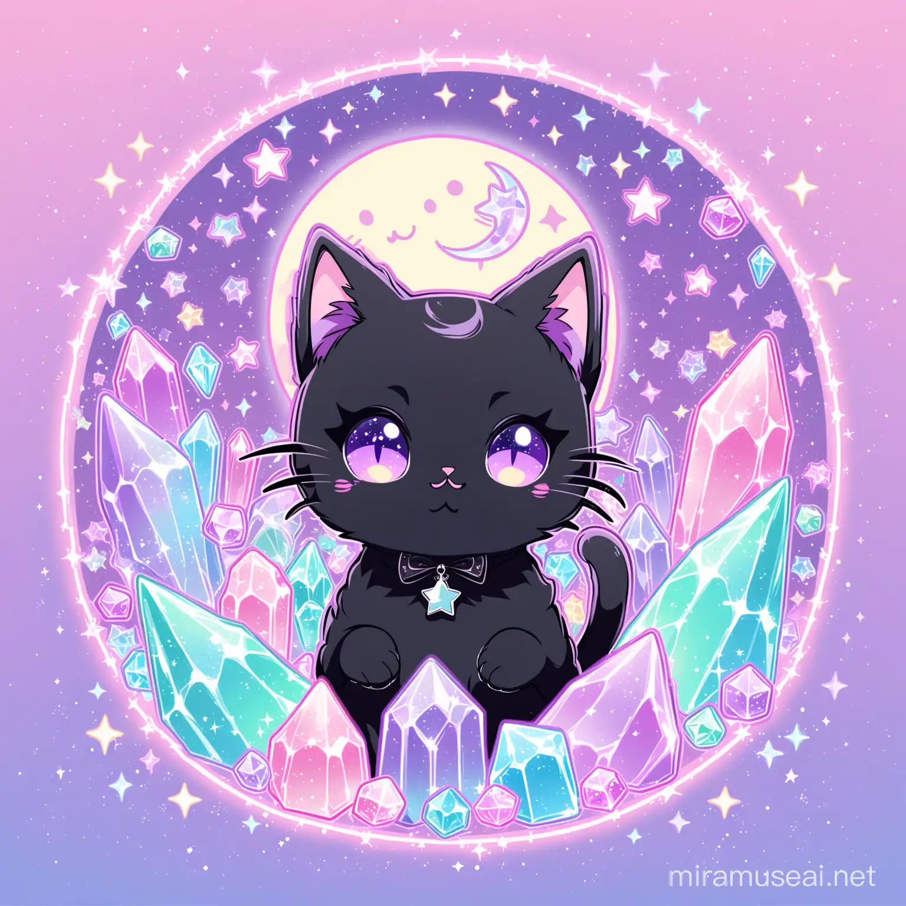
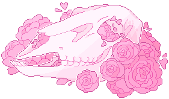

Hi!
I'm Kate & I'm a purple-haired, deaf goth learning to code.
Based in Brisbane, I'm looking to join the tech industry in 2025, as a junior web developer, as I've been told it's a disability-friendly industry, plus I have a love for technology as it has made the world more accessible to me. (And accessibility is important to me)
Having grown up using computers since before I could read (with the help of my older brothers reading out what's on the screen to me), I've dabbled in technology and coding a little over the years, building my own computer once my Dad taught me at age 10, and playing with basic HTML & CSS codes over the years. It's been a long time since I learnt anything new in coding, so here I am, undertaking this diploma of IT, in the hopes to gain employment in the tech industry next year.
Certificates
2024
Diploma of IT: Web Dev (Currently studying)
2023
Certificate III: Community Pharmacy
Participate in Workplace Health and Safety
Support the Supply of Pharmacy Medicines And Pharmacist Only Medicines
Provide and Promote Services to Pharmacy Customers
First Aid
Provide Basic Emergency Life Support
Provide First Aid
Provide Cardiopulmonary Resuscitation
2017
Provide Responsible Service Of Alcohol
2014
Diploma of Beauty Therapy
2007
Cert II in IT: Web Dev
Interests/Hobbies
Gaming • Sanrio • Cats • Rats • Bats • Kawaii stuff • Spooky stuff • Crystals (for the aesthetic/cause they're pretty) • Movies • Nintendo Switch • Settlement building games • Stardew Valley •

Entomology taxidermy • Skulls • Kuromi • Did I mention purple things? • Pets • Mood lighting • Music •

Interests/Hobbies
Gaming • Sanrio • Cats • Rats • Bats • Kawaii stuff •
Spooky stuff • Crystals (for the aesthetic/cause they're pretty) • Movies • Nintendo Switch • Settlement building games • Stardew Valley •
Entomology taxidermy • Skulls • Kuromi • Did I mention purple things? • Pets • Mood lighting • Music •
Certificates
2024
Diploma of IT: Web Dev (Currently studying)
2023
Certificate III: Community Pharmacy
Participate in Workplace Health and Safety
Support the Supply of Pharmacy Medicines And Pharmacist Only Medicines
Provide and Promote Services to Pharmacy Customers
First Aid
Provide Basic Emergency Life Support
Provide First Aid
Provide Cardiopulmonary Resuscitation
2017
Provide Responsible Service Of Alcohol
2014
Diploma of Beauty Therapy
2007
Cert II in IT: Web Dev